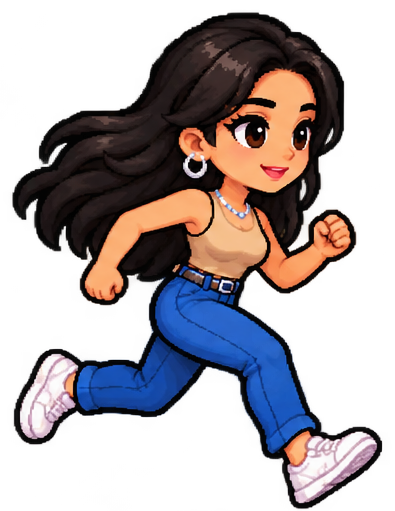
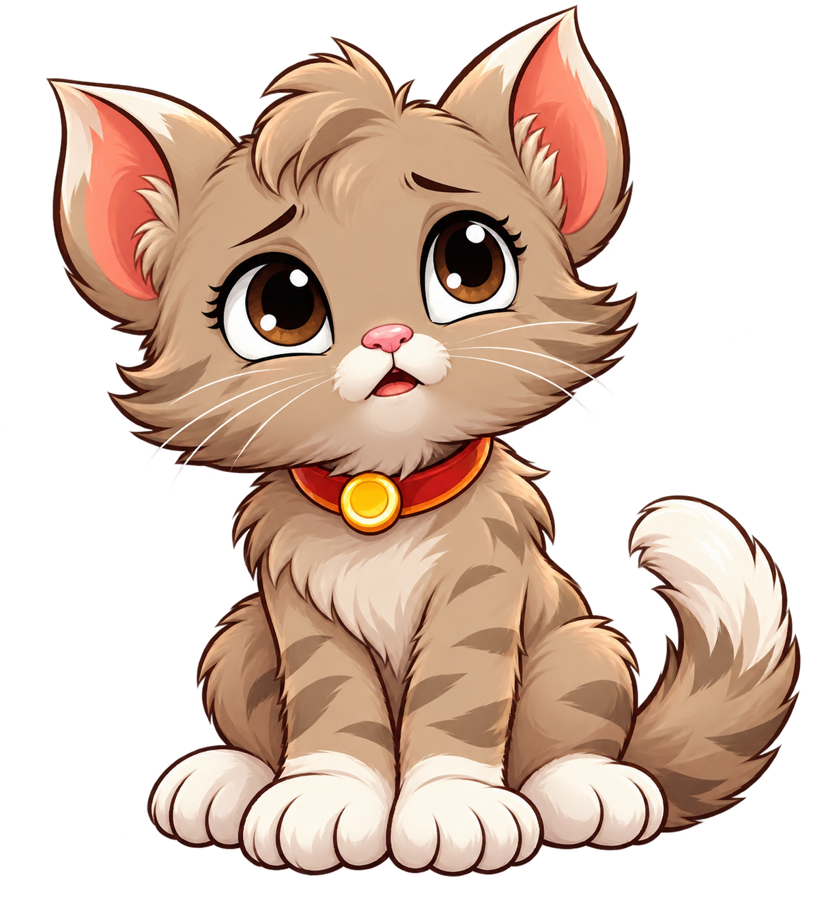
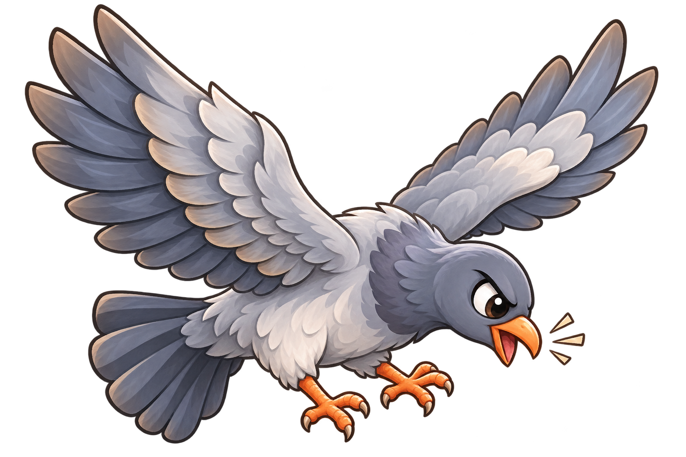
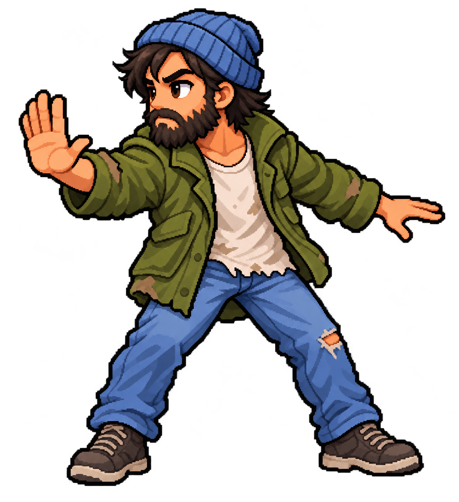

¡QUE NINGUNA
PATITA
SE QUEDE ATRÁS!
Acompaña a Ana en una aventura por las calles de Iquitos. Reúne provisiones, supera desafíos y ayuda a perros y gatos a encontrar un lugar seguro.
COMIENZA
CONTIGO!
NO ES SOLO UN JUEGO
Una aventura
que deja huella.
En las calles de Iquitos hay pequeñas vidas que necesitan una mano amiga. Ana decide actuar y tú serás parte de su recorrido.
En Súmate al Rescate recorrerás lugares emblemáticos de la ciudad, reunirás provisiones y ayudarás a animales que necesitan cuidado y protección. Cada tramo trae nuevos obstáculos y una oportunidad para demostrar que la solidaridad también puede ser una gran aventura.
Completa tres niveles de cuidado y respeto animal: alimenta, protege y rescata sin dejar a ninguna patita atrás.
TRES PARADAS, UNA GRAN CAUSA
Tu camino
al rescate.
Avanza por escenarios inspirados en Iquitos. Cada lugar es una nueva etapa para ayudar y proteger.
Boulevard
Solidario
Comienza la misión, recoge provisiones y mantente alerta para ayudar a los primeros animales.
Iglesia
Matriz
La ruta se vuelve más exigente. Es momento de moverte con inteligencia y no perder de vista tu objetivo.
Puente
Nanay
Llega hasta el final de la ruta y demuestra que ninguna patita debe quedarse sin ayuda.
CONOCE A TUS COMPAÑEROS
Corazones
que ayudan.
Ana no está sola. En el camino encontrarás animales que necesitan atención y personajes que pondrán a prueba tus reflejos.

ANA
Decidida y valiente. Tú controlas sus movimientos para completar cada rescate.
EL PERRITO
Una vida que necesita alimento, cuidado y una oportunidad para estar a salvo.

EL GATITO
También merece protección. Acércate y cumple tu misión de ayuda.

OBSTÁCULOS
DESAFÍOS DEL CAMINOFÁCIL DE APRENDER
Muévete.
Ayuda.
Rescata.
Usa los controles para esquivar obstáculos, avanzar por la ciudad e interactuar cuando alguien necesite tu ayuda.
PROBAR EL JUEGO ↗PIXEL ART ORIGINAL
Así se ve
el rescate.
Explora los personajes, sus movimientos y los escenarios que encontrarás durante la aventura.